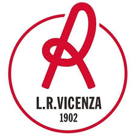

L.R. Vicenza

Il L.R. Vicenza (acronimo di Lanerossi Vicenza), meglio noto come Vicenza, è una società calcistica italiana con sede nella città di Vicenza. Milita in Serie C, la terza divisione del campionato italiano di calcio.
Costituita nel 2018 mediante il trasferimento in città del Bassano a seguito del fallimento societario, è erede e continuatrice de facto della tradizione sportiva iniziata il 9 marzo 1902 con la fondazione dell'Associazione del Calcio in Vicenza (spesso siglato ACIVI) e poi transitata attraverso il Lanerossi Vicenza dal 1953 al 1989[3][4] e infine il Vicenza Calcio, fallito nel 2018.
È il più antico club calcistico dell'Italia nord-orientale nonché del Triveneto e del Veneto. Ha disputato 30 campionati di Serie A, dei quali 20 consecutivi fra il 1955-1956 e il 1974-1975: occupa pertanto il 19º posto nella classifica della tradizione sportiva dei club che hanno giocato nella massima serie italiana e il 18º posto nella relativa classifica perpetua. L'IFFHS lo annovera tra le 15 migliori formazioni italiane del XX secolo.
In ambito nazionale vanta la vittoria di una Coppa Italia (1996-1997) e della Coppa Italia Serie C nel 1981-1982 e nel 2022-2023, mentre il migliore risultato a livello internazionale rimane la semifinale della Coppa delle Coppe (1997-1998); annovera inoltre il raggiungimento della finale nel campionato di Prima Categoria 1910-1911, quando fu sconfitto dalla Pro Vercelli, e il secondo posto alle spalle della Juventus nel campionato di Serie A 1977-1978, in cui conseguì il miglior risultato di sempre di una neopromossa nell'era del girone unico.